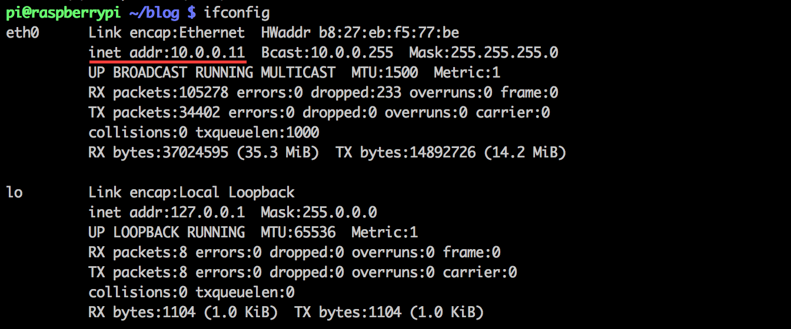

Objectives
- Use that Raspberry Pi (RPi) you have collecting dust!
- Learn how to use SSH on OSX
- Explore some basic networking
Note: The Raspberry Pi Foundation has done a great job
documenting how to login remotely to your little princess...but for the sake of being thorough
SSH connection on your local network
- Go ahead and turn you RPi on. If your RPi is up and running it should have an IP address by this point (if connected to the internet). We will need this in order to connect over the LAN to your RPi.
- We can check the IP by logging in using a monitor/keyboard or by checking the router connecting the RPi to the internet
- If you would like to do this via the command line inside your RPi:

- If you would like to do this "headless" you should log into your router using admin priviledges (if you have never done this a quick google search should get you up to speed) and check for devices connected to the router. Some familiar faces shoud be present - one of which should be your RPi.
- With your RPi address in hand you can locally connect to the server using SSH:
$ ssh pi@0.0.0.0
"0.0.0.0" representing your local RPi IP address
- This will prompt you for your password the default password for your RPi is 'raspberry'
- Once logged in this should bring you to the RPi terminal!
Alright you are some hot stuff logging in remotely to your RPi... Now how would you do that when you are not in the LAN?
SSH connection from anywhere
The RPi Foundation suggests you use this: weaved
I have nothing against weaved but one of our objectives is to experience some basic networking so this tutorial will do it the manual way
- Bring up your admin page for your local router again and you should see an option for "Port Forwarding" select this option
Check out this great post if you just said "Wait...what is 'Port Forwarding'?"
- Once on the Port Forwarding page we want to add a new item with a type TCP/UDP and enable it for port forwarding
- The RPi and other computers listen on port 22 for incoming SSH requests. So should use port 22 in the port category of our newly created item
- Then enter in the RPi IP address we found earlier and start the port fowarding
Now you should be able to connect to your RPi from anywhere! Enter in your IP
$ ssh pi@0.0.0.0
"0.0.0.0" representing your router's IP address
You can now test this out from your LAN